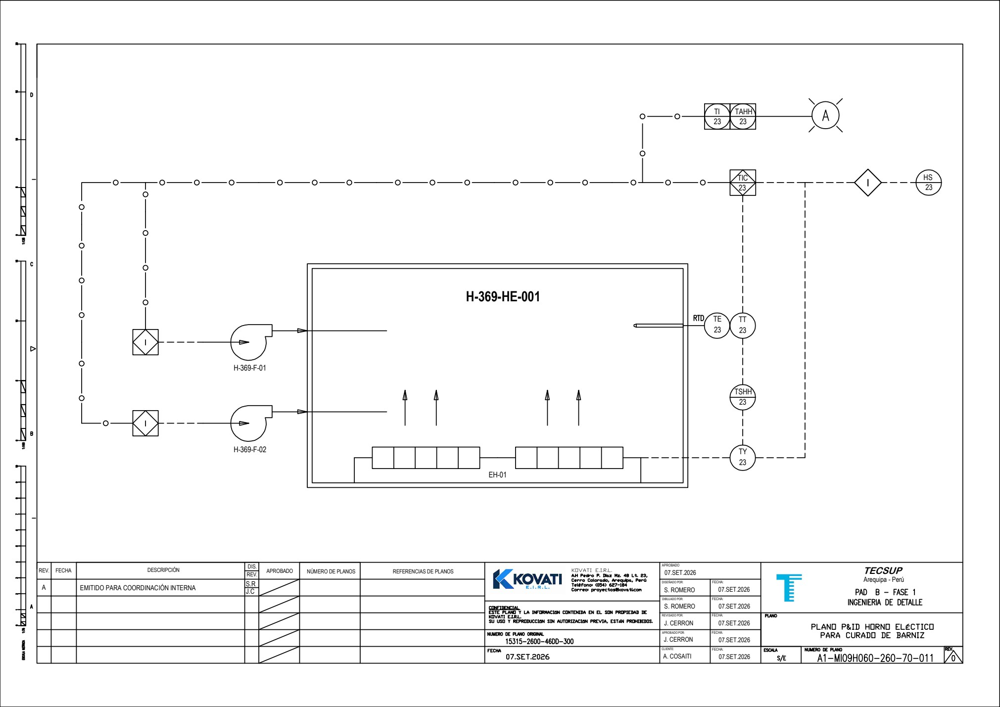
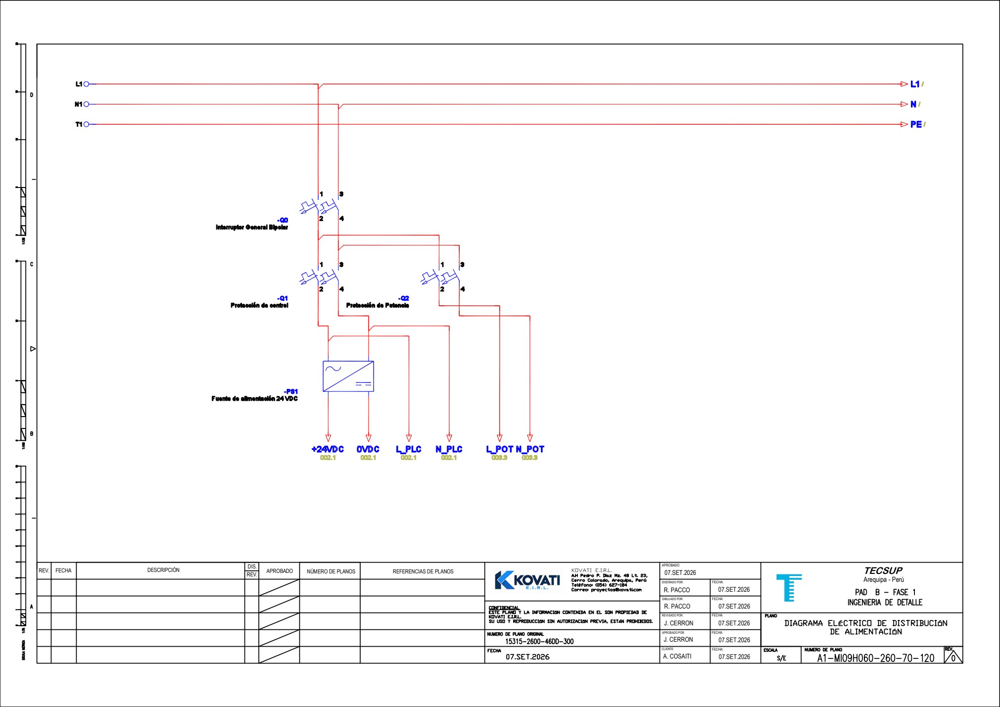
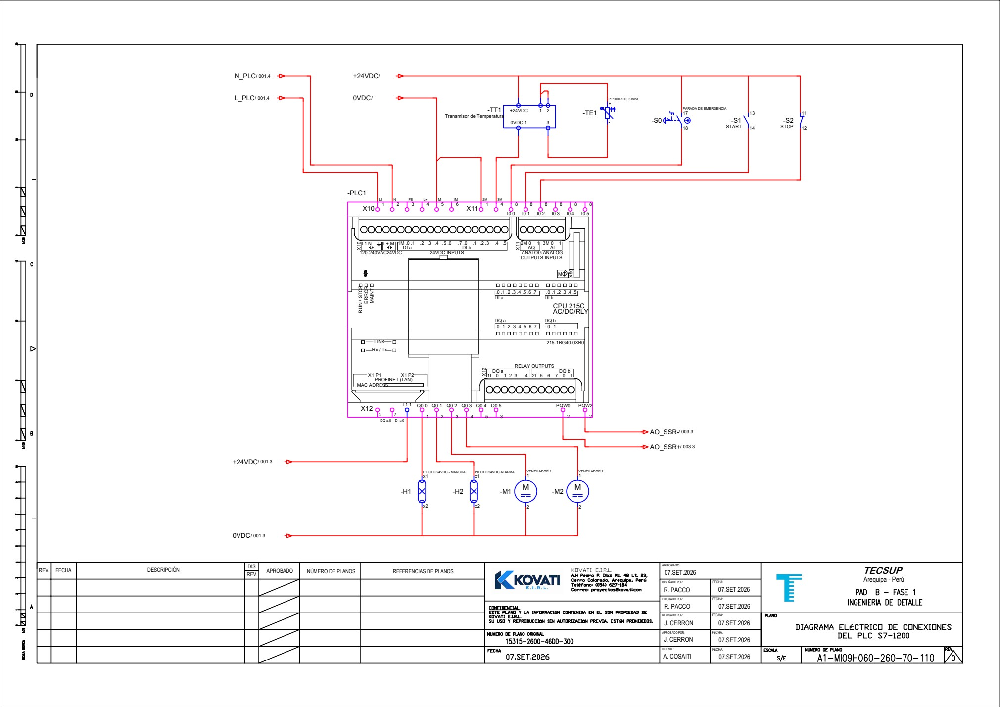
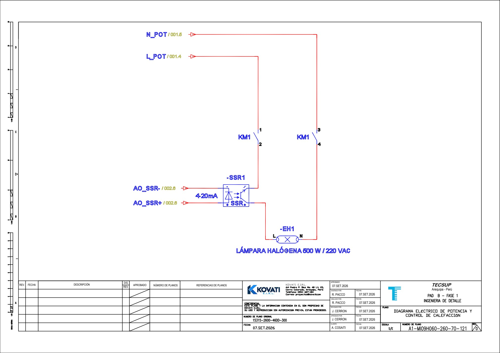
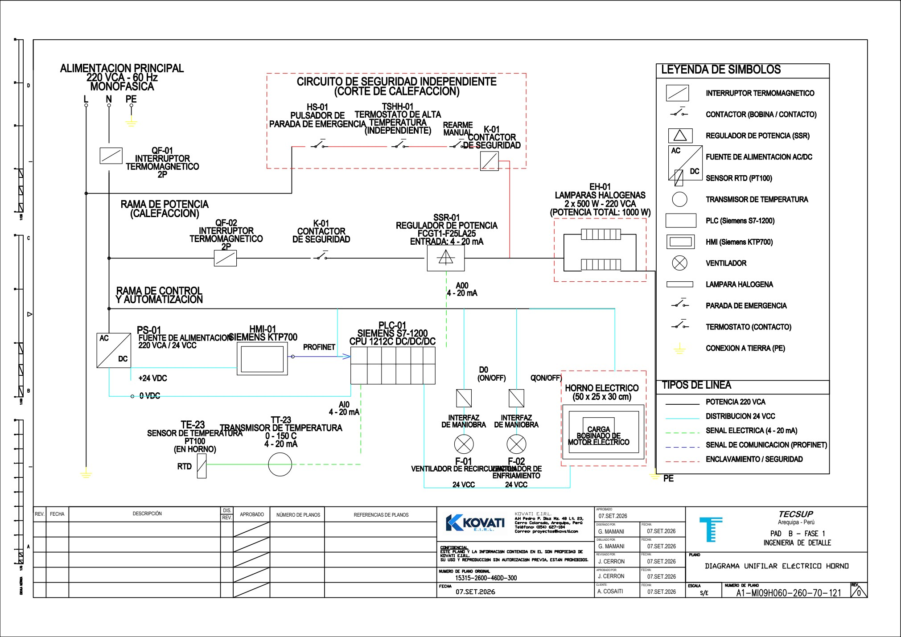

Cómo debe responder KOVAX durante cada etapa
La filosofía de control define el comportamiento esperado del horno: qué configura el operador, cuándo se habilita la calefacción, cómo se regula la temperatura y qué respuesta corresponde ante una parada o falla. Los diagramas permiten relacionar esa lógica con los equipos y sus conexiones.
Ingeniería de diseño · Implementación y verificación posterioresDefinir la operación antes de programar
En la semana 4 establecimos los requisitos y la arquitectura del sistema. En esta etapa los traducimos en reglas de operación: condiciones de arranque, estados del ciclo, acciones de control, transiciones y respuestas de protección. Esta definición será la referencia para desarrollar y revisar la lógica del PLC.
El objetivo es regular la temperatura del aire de una cámara de curado de barniz aislante para bobinados, mediante un PLC Siemens S7-1200, medición PT100 con transmisor, regulación de potencia por SSR y supervisión desde HMI KTP700. La automatización debe coordinar calentamiento, permanencia a consigna y enfriamiento.
- Relacionar requisitos y funciones. Identificar la medición, el control térmico, la temporización y las condiciones que permiten calentar.
- Ordenar la secuencia. Precisar qué ocurre en cada estado y qué condición permite pasar al siguiente.
- Definir respuestas ante fallas. Vincular las alarmas con el corte de calefacción, el bloqueo y el rearme.
- Contrastar la lógica con los planos. Revisar el P&ID, la alimentación, las conexiones del PLC y el circuito de potencia.
El contenido procede del informe actualizado Horno_LaTeX_HAZOP.zip. Se presenta como definición de ingeniería; los estados, alarmas y diagramas no acreditan por sí mismos una implementación concluida ni pruebas aprobadas en la semana 5.
El lazo cerrado de temperatura TIC-23
La PT100 TE-23 mide la temperatura del aire de la cámara H-01. El transmisor TT-23 la entrega al PLC como una señal de 4–20 mA, correspondiente al rango configurado de 0–150 °C. El controlador TIC-23 compara la medición con la consigna y calcula la acción PID que gobierna el regulador SSR-01.
Consigna
Temperatura configurada por el operador en la HMI.
Temperatura del aire
Valor recibido desde la cadena PT100–TT-23.
Potencia térmica
Energía de calefacción aplicada a EH-01 mediante el SSR.
- TE-23PT100
Temperatura del aire - TT-23Transmisor
4–20 mA al PLC - TIC-23PID en el PLC
Comparación SP / PV - SSR-01Mando previsto
4–20 mA - EH-01 / H-01Calefacción
Respuesta de la cámara
↶ La nueva temperatura del aire vuelve a ser medida por TE-23: se cierra la realimentación.
La calefacción nominal prevista es de dos lámparas halógenas de 500 W. F-01 favorece la recirculación durante calentamiento y curado; F-02 participa en el enfriamiento. Las pérdidas térmicas, la temperatura ambiente, la masa del bobinado y la apertura de la cámara pueden alterar la respuesta del proceso.
Qué calcula el PID
El error se expresa como e(t) = SP(t) − PV(t). La acción proporcional responde al error instantáneo, la integral considera el error acumulado y la derivativa su velocidad de variación. El informe plantea utilizar el bloque tecnológico PID de TIA Portal y ajustar sus parámetros durante la puesta en marcha.
u = 0 % → 4 mA · u = 50 % → 12 mA · u = 100 % → 20 mA
Esta conversión describe el mando previsto al SSR y requiere una salida analógica compatible. Los valores anteriores son referencias de cálculo. La compatibilidad del regulador, los límites de salida, el tiempo de ejecución y la sintonización se deben verificar durante la implementación.
El informe toma como referencia para ROYALAC 158/4 una consigna de 130–140 °C y un tiempo de 120–240 minutos, sujetos a la ficha técnica del barniz. La PT100 mide aire: esa lectura no demuestra por sí sola la temperatura del núcleo del bobinado ni la uniformidad térmica de toda la carga.
Seis estados de ciclo y una respuesta prioritaria
La secuencia normal va de S-00 a S-05. El estado SF-01 tiene prioridad cuando aparece una falla bloqueante o una emergencia. Abre cada estado para consultar su condición de entrada y las acciones previstas en el informe.
S-00Espera1 / 6
- Condición de entrada
- Sistema energizado, sin ciclo activo ni fallas bloqueantes.
- Acción y transición previstas
- Calefacción desactivada. Permite configurar los parámetros desde la HMI.
S-01Preparación2 / 6
- Condición de entrada
- Recepción de la orden de inicio desde la HMI.
- Acción y transición previstas
- Verifica parámetros, señal de temperatura y condiciones de habilitación. Si son válidos, pasa a calentamiento.
S-02Calentamiento3 / 6
- Condición de entrada
- Condiciones de operación verificadas.
- Acción y transición previstas
- Activa F-01 y habilita el control PID sobre EH-01. Al alcanzar la consigna de temperatura, pasa a curado.
S-03Curado4 / 6
- Condición de entrada
- Temperatura del aire alcanza la consigna programada.
- Acción y transición previstas
- Inicia la temporización y mantiene la regulación PID. Al cumplirse el tiempo programado, pasa a enfriamiento.
S-04Enfriamiento5 / 6
- Condición de entrada
- Tiempo de curado cumplido.
- Acción y transición previstas
- Desactiva EH-01 y activa F-02. Finaliza cuando se cumple la condición de enfriamiento que se defina.
S-05Finalización6 / 6
- Condición de entrada
- Enfriamiento concluido.
- Acción y transición previstas
- Desactiva las órdenes de actuación, notifica el fin del ciclo en la HMI y retorna al estado de espera.
SF-01Falla o emergenciaPrioridad sobre el ciclo
- Condición de entrada
- Falla de medición, sobretemperatura o parada de emergencia.
- Acción y transición previstas
- Interrumpe la calefacción, genera la alarma correspondiente y bloquea el reinicio automático hasta la corrección de la falla y el rearme deliberado.
El tiempo de curado empieza al alcanzar la consigna
El calentamiento y la permanencia de curado son etapas distintas. Según la filosofía de operación y RF-09 de la SRS, el temporizador comienza cuando la temperatura del aire alcanza la consigna. Durante el conteo continúa activa la regulación PID. Al completarse el tiempo, la calefacción se desactiva y empieza el enfriamiento.
El documento deja por definir la condición de fin del enfriamiento y el tratamiento definitivo de la temporización. Debe precisarse cómo se valida la llegada a consigna, qué banda se admite y qué sucede con el conteo si la temperatura sale de ella. Esta página no asigna tolerancias, tiempos de estabilización ni una temperatura de descarga que el informe todavía no establece.
La orden de inicio necesita condiciones válidas
Consigna y tiempo
La HMI entrega los valores de operación; el PLC debe validarlos antes de habilitar el ciclo.
Temperatura válida
La señal de TT-23 debe estar dentro del intervalo admitido y disponible para la regulación.
Sin bloqueos activos
Las condiciones de seguridad y del circuito de calefacción deben permitir el calentamiento.
La HMI permite configurar, solicitar inicio o parada y visualizar temperatura, tiempo, estado y alarmas. El PLC ejecuta la secuencia y el PID. Las protecciones independientes retiran la energía de calefacción ante las condiciones críticas previstas.
TSHH-01 / HS-01 → K-01 → corte de EH-01
El termostato de sobretemperatura y la parada de emergencia deben actuar sobre el dispositivo de corte de calefacción sin depender del cálculo PID ni del SSR. La indicación y el bloqueo en el PLC requieren las señales auxiliares de supervisión correspondientes.
Parada normal y falla bloqueante
La parada normal solicitada por el operador desactiva la calefacción y ejecuta la secuencia de parada que se establezca. Una falla de medición, una sobretemperatura crítica o la emergencia interrumpen la calefacción y exigen corregir la causa y efectuar un rearme deliberado antes de permitir un nuevo ciclo.
Restablecer una alarma no equivale a iniciar el calentamiento. El diseño debe impedir el reinicio automático después de una emergencia, una falla bloqueante o el retorno de energía. El estado de los ventiladores durante una parada o falla debe quedar definido en la lógica; la matriz no ordena activar F-02 ante todas las fallas.
Qué se detecta y cómo debe responder el sistema
La matriz de ingeniería básica distingue ocho condiciones AL-01 a AL-08. Incluye advertencias, fallas, una orden de parada y avisos de finalización. Cada condición vincula la indicación con una respuesta y un modo de restablecimiento.
AL-01Temperatura alta: advertencia
- Condición detectada
- Temperatura superior al límite de advertencia configurado.
- Indicación
- Alarma de temperatura alta en HMI.
- Respuesta prevista
- Notificar al operador y mantener la supervisión del proceso; aplicar las restricciones de control que se definan.
- Rearme / continuación
- Automático*
AL-02Sobretemperatura crítica
- Condición detectada
- Actuación del termostato independiente TSHH-01.
- Indicación
- Alarma de sobretemperatura crítica.
- Respuesta prevista
- Abrir K-01 e interrumpir la alimentación de EH-01 mediante el circuito independiente.
- Rearme / continuación
- Manual
AL-03Falla de medición
- Condición detectada
- Señal de TT-23 inválida o fuera del intervalo admitido.
- Indicación
- Alarma de falla de medición de temperatura.
- Respuesta prevista
- Deshabilitar la calefacción, detener el ciclo y bloquear el reinicio automático.
- Rearme / continuación
- Manual
AL-04Parada de emergencia
- Condición detectada
- Activación del pulsador de emergencia HS-01.
- Indicación
- Indicación de parada de emergencia.
- Respuesta prevista
- Interrumpir la alimentación de los calefactores mediante el circuito independiente.
- Rearme / continuación
- Manual
AL-05Calefacción no habilitada
- Condición detectada
- Pérdida de habilitación del circuito de calefacción.
- Indicación
- Alarma de calefacción no habilitada.
- Respuesta prevista
- Impedir la orden de calentamiento hasta restablecer las condiciones de habilitación.
- Rearme / continuación
- Manual
AL-06Parada normal
- Condición detectada
- Interrupción del ciclo por orden de parada normal.
- Indicación
- Indicación de ciclo detenido por operador.
- Respuesta prevista
- Desactivar la calefacción y ejecutar la secuencia de parada establecida.
- Rearme / continuación
- Nuevo inicio
AL-07Curado finalizado
- Condición detectada
- Finalización del tiempo programado de curado.
- Indicación
- Aviso de curado finalizado.
- Respuesta prevista
- Desactivar EH-01 e iniciar la etapa de enfriamiento.
- Rearme / continuación
- Automático
AL-08Ciclo completado
- Condición detectada
- Finalización de la etapa de enfriamiento.
- Indicación
- Aviso de ciclo completado.
- Respuesta prevista
- Finalizar la operación y retornar al estado de espera.
- Rearme / continuación
- Automático
Automático* en AL-01: se refiere únicamente al restablecimiento de la advertencia. No autoriza el reinicio de un ciclo bloqueado. El umbral de advertencia y el límite de corte crítico son parámetros diferentes y requieren definición y verificación.
Matriz causa–efecto de referencia
| Condición | Cortar EH-01 | Activar F-02 | Alarma HMI | Bloquear ciclo | Rearme manual |
|---|---|---|---|---|---|
| AL-01 · Advertencia | — | — | Sí | — | — |
| AL-02 · Sobretemperatura crítica | Sí | — | Sí* | Sí* | Sí |
| AL-03 · Falla de TT-23 | Sí | — | Sí | Sí | Sí |
| AL-04 · Emergencia | Sí | — | Sí* | Sí* | Sí |
| AL-05 · Pérdida de habilitación | Sí | — | Sí | Sí | Sí |
| AL-06 · Parada normal | Sí | — | — | — | — |
| AL-07 · Tiempo de curado cumplido | Sí | Sí | — | — | — |
| AL-08 · Enfriamiento finalizado | Sí | — | — | — | — |
Sí: acción requerida. —: la condición no exige esa acción; no significa una orden de apagar el ventilador. Sí*: indicación o bloqueo sujetos a disponer de realimentación auxiliar hacia el PLC. El corte por TSHH-01 y HS-01 debe producirse mediante el circuito independiente. Los avisos de fin de curado y ciclo se describen en AL-07 y AL-08 aunque la matriz no los marca como alarmas de falla.
Correspondencia de códigos dentro del informe
Se conservan aquí los identificadores de “Matriz de alarmas y enclavamientos” y “Matriz causa-efecto” de ingeniería básica. El apartado posterior de configuración de alarmas y eventos utiliza otra enumeración para algunas condiciones y una respuesta más restrictiva para temperatura elevada. Debe conciliarse un listado único, con sus umbrales y acciones, antes de trasladarlo a PLC y HMI.
De la función de control a los circuitos
El P&ID explica las relaciones funcionales del proceso. Los esquemas eléctricos muestran cómo se representan la alimentación, las conexiones del PLC y la rama de calefacción. Se incorporan los documentos ya publicados en Planos y diagramas; las cuatro láminas eléctricas coinciden con las del ZIP actualizado.
P&ID del horno

Distribución de alimentación

Conexiones del PLC

Potencia y control de calefacción

Diagrama unifilar del horno

Para interpretar las líneas y símbolos del P&ID, consulta la hoja cero de simbología. Los planos conservan sus etiquetas originales; la nomenclatura de bornes, la cantidad de cargas y las referencias de equipos deben mantenerse concordantes con la lista de señales y la lógica definitiva.
El mando analógico al SSR regula la potencia; el circuito de K-01 permite interrumpir la alimentación de calefacción. La revisión debe comprobar ambas funciones, junto con los permisos de arranque y la supervisión de la medición. La existencia del plano documenta el diseño y debe complementarse con el conexionado y sus verificaciones.
Una referencia para programar y comprobar el comportamiento
Esta semana organiza el lazo TIC-23, la secuencia S-00 a S-05, la respuesta prioritaria SF-01 y las condiciones de alarma y enclavamiento. El resultado es una descripción común para relacionar requisitos, programa y diagramas, y para revisar las transiciones antes de la integración.
Comprobaciones que deben respaldar la implementación
- Permisos de inicio: comprobar que una medición inválida o un bloqueo impiden habilitar la calefacción.
- Regulación: verificar escalamiento, mando analógico al SSR y respuesta térmica del PID, con registros de prueba.
- Temporización: comprobar el inicio del conteo al alcanzar la consigna y el corte de calefacción al cumplir el tiempo.
- Transiciones: verificar la entrada a enfriamiento, la condición de finalización y la indicación de fin de ciclo.
- Protección y rearme: comprobar el corte independiente y que el retorno de energía o el restablecimiento de una alarma no provoquen un arranque automático.
Quedan por cerrar los límites de advertencia y protección, la banda de curado, el comportamiento del temporizador fuera de banda, las condiciones de parada y enfriamiento y la codificación definitiva de alarmas. Estas definiciones deberán acompañar los parámetros de sintonía y las pruebas de aceptación. El IPERC y HAZOP de la semana 9 complementa la evaluación de los fallos y las medidas del proyecto.
Consultar y descargar los diagramas
Fuente y alcance del informe web
Fuente principal: Horno_LaTeX_HAZOP.zip, archivo main.tex. Secciones “Filosofía de operación y control”, “Descripción de lazos de control”, “Secuencias de funcionamiento”, “Matriz de alarmas y enclavamientos”, “Matriz causa-efecto”, “Estrategia de control” y “Algoritmos de control”.
Los códigos de estados, las condiciones y las acciones de las matrices proceden del informe. Las figuras reutilizan los PDF y las vistas publicadas en Documentación. El P&ID y la hoja cero mantienen el mismo contenido binario del ZIP, y las cuatro láminas eléctricas corresponden a sus archivos individuales. Las comprobaciones descritas son criterios de verificación, sin atribuirles resultados de ensayo.